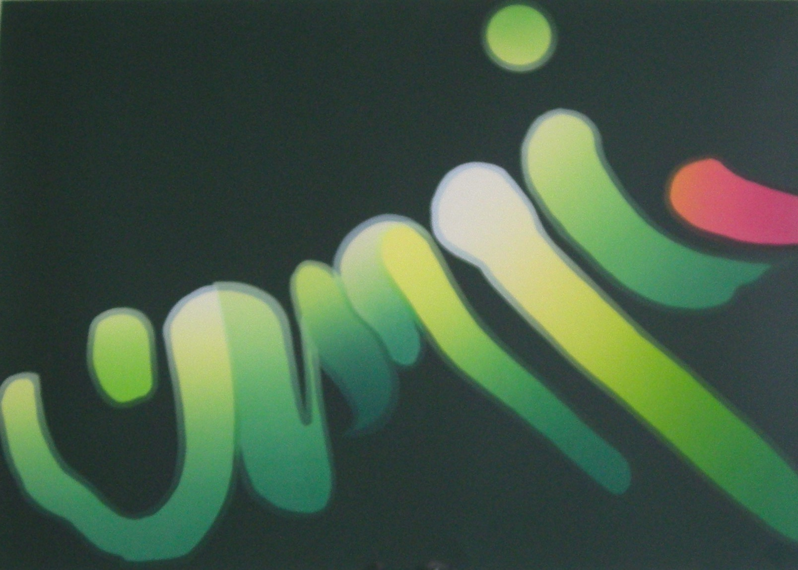
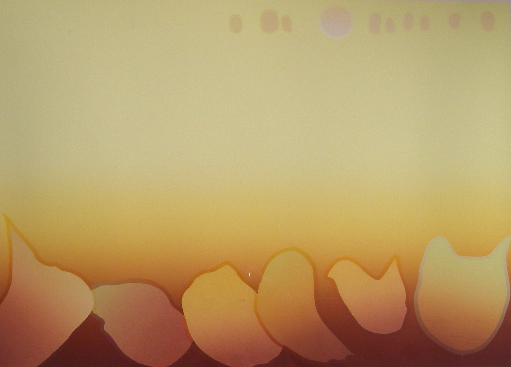
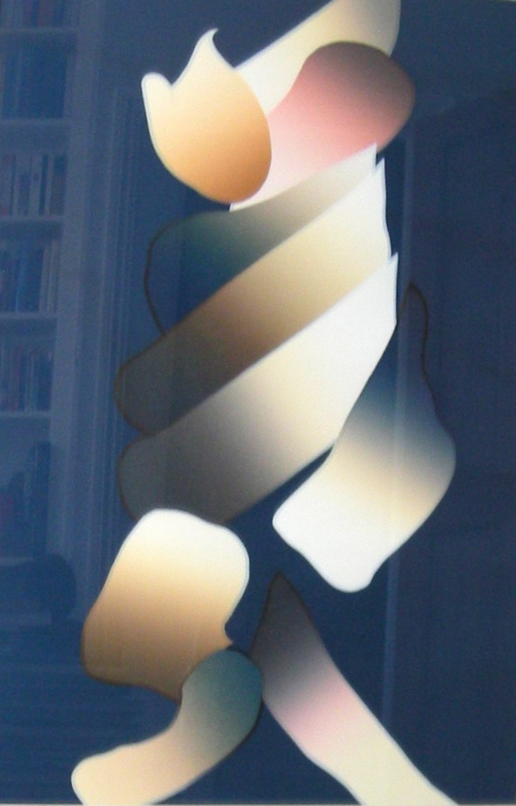
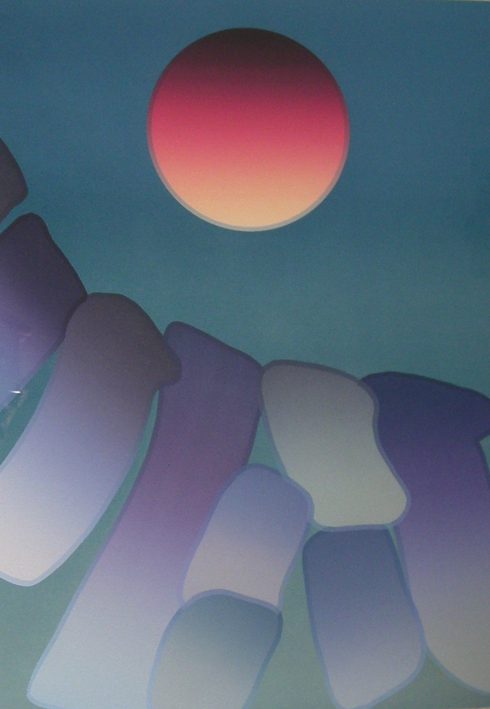
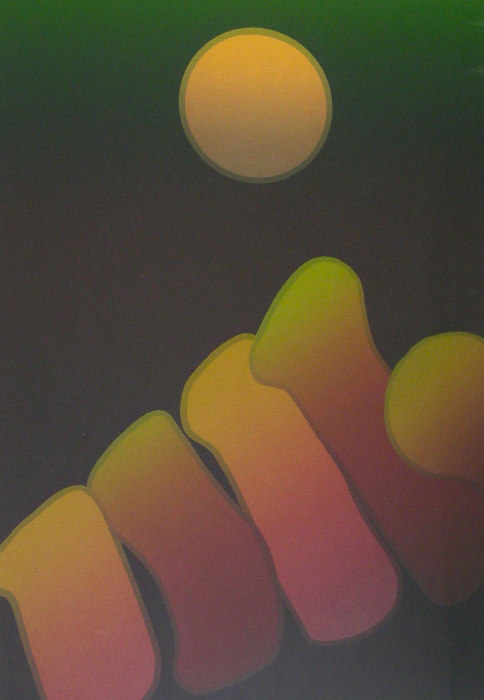
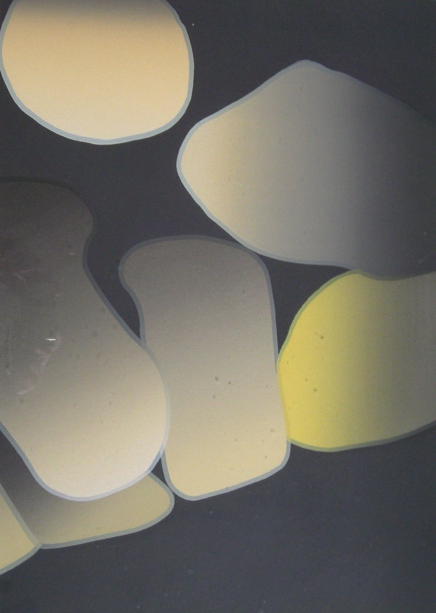
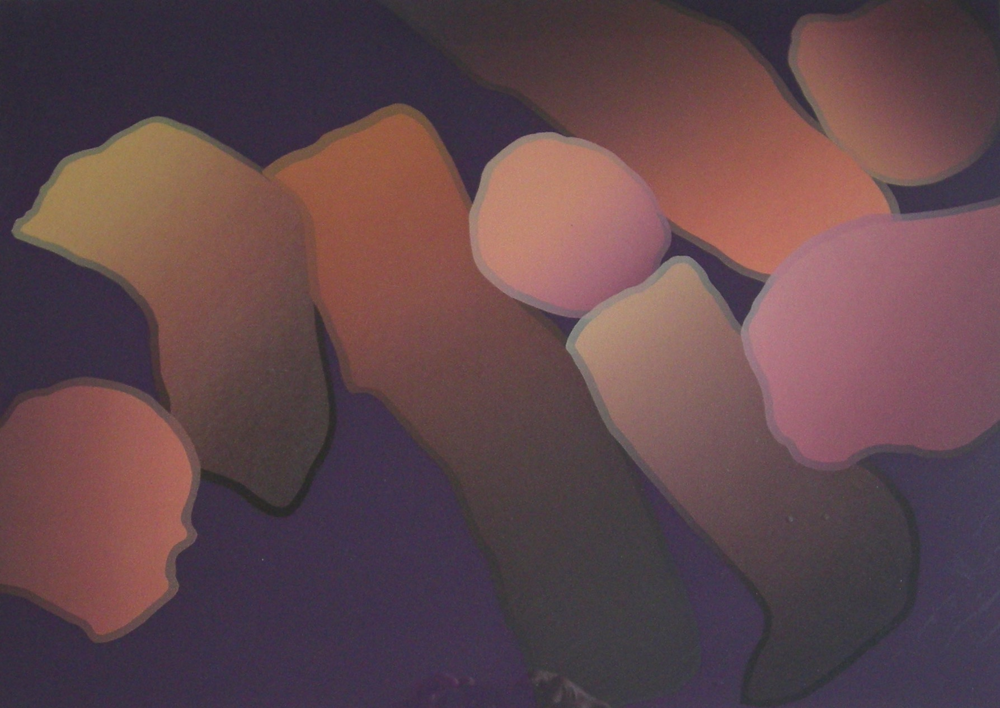

Shi-Chi Lee
1938 – 2019
Artist Biography
Lee Shi-Chi was one of Taiwan’s most important modern artists. Born in 1938 in Kinmen, he graduated in fine arts in 1958 from Taipei Normal School and in that year helped co-found the Modern Graphic Art Association. Relentlessly inventive, Lee was a key member of the Ton Fan Group. He worked in a wide variety of media but always sought a balance between modernity and tradition and between East and West. His painting draws heavily on Chinese calligraphic traditions but is informed by Western abstraction. He has held numerous solo shows over the years, including at prestigious venues in China, Hong Kong, USA, Korea, Denmark, Switzerland and elsewhere. Lee was the subject of a major cross-Straits cultural initiative with China in 2001, a conference on his work taking place first on Kinmen and then in China itself.






